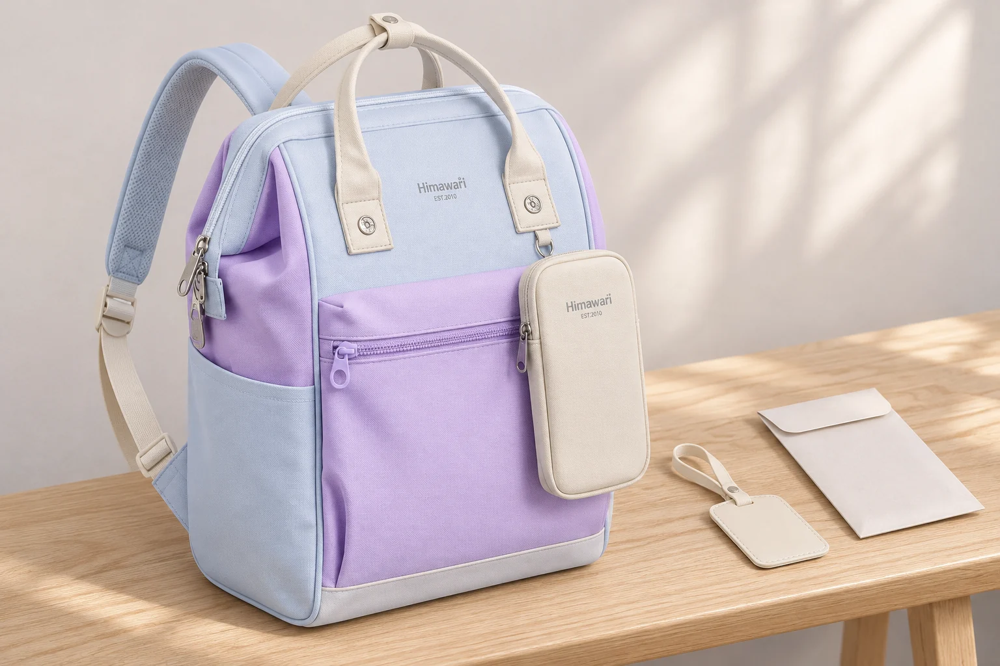

책가방 이름표, 어디까지 보이게 달면 좋을까
비슷한 책가방이 여러 개 놓이는 곳에서는 내 가방을 알아볼 표시를 생각하게 됩니다. 이름을 크게 써서 밖에 달면 찾기 쉬울 것 같지만, 등교하는 동안에도 그 글씨가 계속 보입니다. 책가방의 표시를 고를 때는 본인이 알아볼 단서와 다른 사람에게 보여줄 내용을 나누어 볼 수 있습니다. 이름표를 달 자리도 가방을 열고 메는 동작 안에서 정해 봅니다.
No.1027 라벤더는 연보라색 앞 포켓과 연한 파란색 옆면, 아이보리색 손잡이와 세로로 긴 부착 파우치가 보이는 모델입니다. 확인된 외부 크기는 가로 28 × 세로 40 × 폭 17cm입니다. 이 글에서 사용하는 이름표와 종이 봉투는 별도 소품입니다. 기본 구성품이나 전용 이름표 홀더가 있다고 설명하는 사진은 아닙니다. 사진에는 실제 이름이나 연락처를 넣지 않았습니다.
멀리서 알아볼 표시에 연락처도 필요할까요
아이가 자기 가방을 구분하려는 장면과 누군가에게 연락 방법을 알려주려는 장면은 다릅니다. 선반에서 가방 하나를 골라 들 때에는 색이나 간단한 모양만으로 본인이 알아볼 수도 있습니다. 이 목적이라면 이름과 연락처를 함께 크게 적어야 하는지부터 다시 생각해 볼 만합니다. 무엇을 구별하려는지 정하면 표시에 담을 내용도 짧아집니다.
이름표를 바깥에 달면 걷는 동안 보는 방향과 책상에 내려놓은 뒤 보는 방향이 달라집니다. No.1027의 앞 파우치 옆에 단 표시는 가방 앞면을 마주 볼 때 잘 드러날 수 있지만, 실제로 어느 정도 읽히는지는 글씨와 표의 크기, 매달리는 방향에 따라 달라집니다. 본인이 볼 때만 나타날 것으로 생각하지 않고 평소 가방을 둔 모습에서도 살펴봅니다.
학교나 이용 시설에서 가방 표시 방법을 안내한다면 그 내용을 먼저 확인합니다. 반이나 이름이 필요한지, 정해진 부착 위치가 있는지에 따라 선택할 표시가 달라질 수 있습니다. 이 글은 모든 학교에 같은 규칙이 있다고 가정하지 않습니다. 필요한 표시를 정한 뒤에도 주소나 다른 정보까지 함께 적을 이유가 있는지는 각각 판단할 수 있습니다.

지퍼 손잡이에 걸면 여닫는 데 불편하지 않을까요
이름표 고리가 작다고 아무 지퍼에나 달 수 있다고 보기는 어렵습니다. 연결 가능한 부위와 허용된 부착 방법을 제품 안내에서 확인해야 합니다. No.1027 원본에 보이는 앞 포켓 지퍼와 파우치 지퍼는 물건을 열고 닫는 부위입니다. 별도 표식을 매다는 용도로 확인된 고리라고 이 글에서 정하지 않습니다.
부착이 허용된 부위에 표를 달더라도 이름표가 아래로 움직이는 범위를 봅니다. 실제로 사용할 때는 지퍼 손잡이를 가리는지, 다른 포켓을 열 때 그 길을 지나가는지, 선반에 올렸을 때 가방 밑으로 들어가는지를 봅니다. 사진에서 보기 좋은 위치와 손으로 여닫기 편한 위치가 다르면 둘 중 어떤 목적을 우선할지 정해야 합니다. 표를 확인하려고 가방을 매번 뒤집어야 하는지도 함께 봅니다.
원단에 새 구멍을 뚫거나 부품을 벌려 고정하는 방식은 간단한 표시 추가와 다릅니다. 부착 방법을 확인하지 못했다면 끼우기 위해 제품을 변형하지 않습니다. 가방을 알아볼 표식을 달려다가 원래 여밈을 다루기 어렵게 만드는 선택은 피하고 싶습니다. 별도 연결 부품을 추가할 경우에도 구성품 여부와 사용 방법을 각각 확인합니다.
안쪽에 넣으면 어느 때 확인할 수 있을까요
밖에서 바로 읽히지 않는 곳에 카드를 두려면 찾는 사람의 동작도 생각해야 합니다. 주머니를 열어야 보이는 카드라면 평소에는 덜 드러나지만 필요한 순간에 어느 주머니인지 설명할 수 있어야 합니다. 카드가 다른 물건 아래로 숨어 있으면 꺼내는 과정도 달라집니다. 특정 포켓에 어떤 크기 카드가 들어간다고 단정하지 않고 실제 카드와 포켓을 대조합니다.
No.1027 앞의 긴 파우치는 바깥에 보이는 별도 공간입니다. 파우치가 보인다는 사실만으로 안에 넣은 내용까지 밖에서 읽힌다고 할 수는 없습니다. 반대로 지퍼를 열고 물건을 꺼내는 동안에는 내부가 다른 방향으로 보일 수 있습니다. 정보가 가려지는지는 닫힌 정면 한 장에 그치지 않고 평소 열고 닫는 자세까지 포함해서 봅니다.
내용을 가리는 덮개형 이름표를 고른다면 덮개를 여는 방향과 저절로 돌아가는 모습도 확인할 수 있습니다. 가방의 손잡이를 잡았을 때 글씨 면이 바깥으로 뒤집히는지, 표를 다시 닫은 상태를 본인이 알 수 있는지 살펴보세요. 덮개가 있다는 설명만으로 모든 사용 장면에서 내용이 가려진다고 보장할 수는 없습니다. 제품 안내를 읽고 실제 달아 둔 모습을 확인하는 과정이 필요합니다.
이름표를 바꿀 때 가방에서도 지울 것이 있을까요
내용을 고쳤다면 새 표와 이전 표가 동시에 남아 있지 않은지 봅니다. 종이를 바꿔 넣는 방식에서는 주머니 안의 오래된 카드도 확인합니다. 가방을 가족에게 넘겨주거나 다른 용도로 쓰는 경우에는 바깥 표시뿐 아니라 안쪽에 남겨 둔 표식까지 점검할 수 있습니다. 누가 사용할 가방인지 달라졌다면 표시도 현재 사용 상태와 맞아야 합니다.
표가 보이는 위치를 확인하려고 가방 사진을 찍을 때에는 실제 글씨가 담기는지도 봅니다. 모양을 비교할 자료만 필요하다면 내용 면을 가린 상태로 촬영할 수 있습니다. 다른 사람에게 표의 위치를 묻는 상황에서도 가방의 어느 부위인지 설명하는 데 필요한 화면을 고릅니다. 이 글의 소품 사진처럼 글씨 없이 위치만 살펴보는 방법도 있습니다.
마지막에는 아이가 가방을 집어 들고 다시 내려놓는 모습을 함께 봅니다. 자기 표식을 찾을 수 있는지, 이름표가 여밈을 가리지 않는지, 보여주려던 내용이 어느 방향에서 읽히는지 확인합니다. 이름을 크게 쓰는 일부터 시작하기보다 가방을 구분할 단서와 연락을 위한 내용을 따로 정하면 표를 달 위치도 실제 책가방의 사용 방식에 맞춰 고르기 쉽습니다.